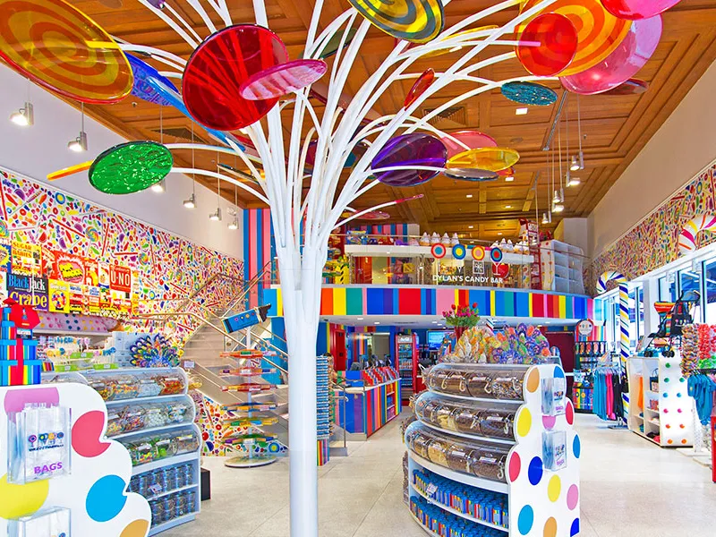
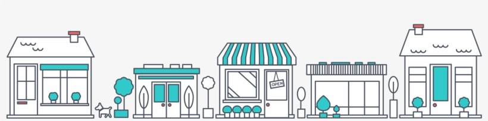
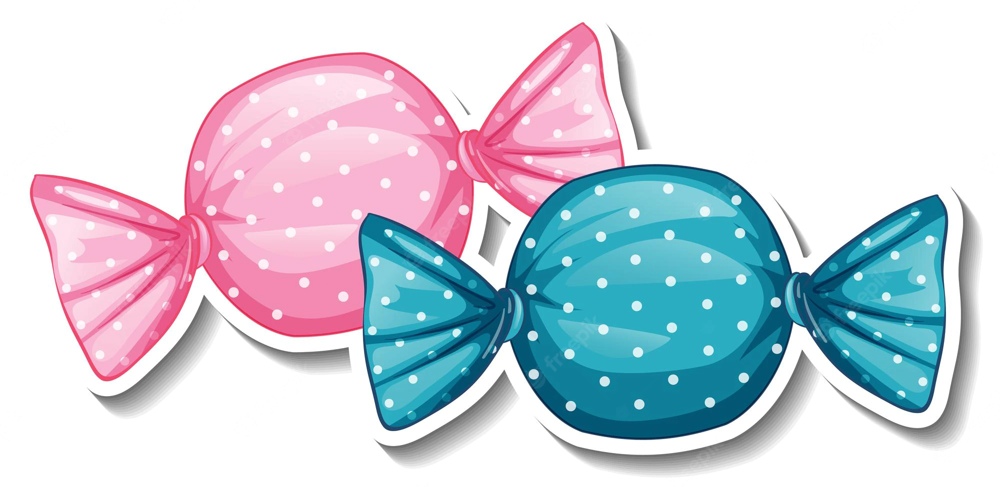
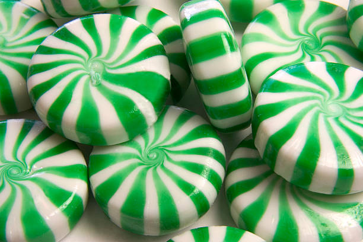
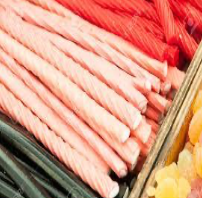
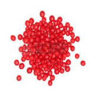
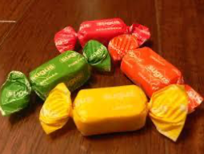
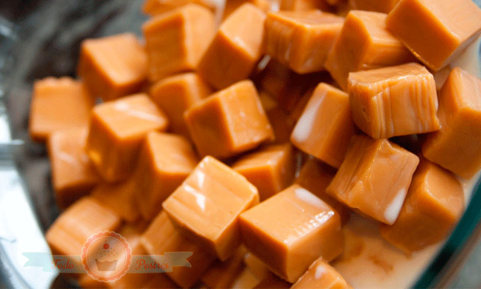

Acerca de

Sweet Shop es una visita obligada para todos aquellos que sueñan con vivir en el mundo de Willy Wonka y que sienten un placer inmenso a la hora de comer caramelos. Sweet Shop es la tienda de caramelos más grande de América Latina. Abrió sus puertas hace algunos meses en la ciudad de Caracas. Son más de 10.000 metros cuadrados de caramelos de todo tipo y color.
Como no podía ser de otra manera allí se puede encontrar una amplia gama de caramelos. Se ofrece una oferta inmensa de caramelos provenientes de todas partes del mundo pero principalmente de nuestra fábrica Sweet UCAB. Paletas de distintas formas, tamaños y todos los sabores que se pueden imaginar hay tentadoras delicias que esperan para ser degustadas. Sweet Shop cuenta con la pared más grande de dulces; está llena de ositos de goma, gusanitos y caramelos (todas excelentes opciones que hacen realmente difícil la decisión de qué llevar). Además, en el centro de la tienda, se encuentra un enorme árbol de chocolate, lleno de paletas de colores. Bajo el método “Pick and Mix” se puede elegir la combinación de dulces que se desee.
En la actualidad Sweet UCAB es la principal empresa de caramelos de Venezuela, el primer productor mundial de caramelos duros, el principal exportador de golosinas de Venezuela, Brasil, Chile y Perú, y constituye una de las empresas de dulces más grandes de América del Sur.

Tiendas Físicas

En la actualidad contamos con 40 tiendas a nivel nacional, ubicadas en las capitales de cada estado y en algunas ciudades
➔ El Cafetal
➔ Maracaibo
➔ Barquisimeto
➔ El Tigre
➔ Guanare
➔ Paraguaná
➔ Valle la Pascua
➔ Ureña
➔ San Félix
➔ Carora
➔ Acarigua
➔ Táriba
➔ Petare
➔ Maracay
➔ Puerto Ordaz
➔ San Cristóbal
➔ Los Teques
➔ Anaco
➔ San Casimiro
➔ San Antonio de los Altos
➔ Antimano
➔ La Guaira
➔ Margarita
➔ Guanta
➔ Puerto La Cruz
➔ Mérida
➔ Barinas
➔ Tucacas
➔ Costa Oriental del Lago
➔ La Victoria
➔ Villa de Cura
➔ Ciudad Ojeda
➔ Ciudad Bolívar
➔ Barcelona
➔ San Fernando de Apure
➔ Valencia
➔ Maiquetía
➔ Carúpano
➔ Coro
➔ Trujillo
Top mejores productos

Chupetas Rimbombin
El famoso caramelo con palo ideado por Enric Bernat en 1958 sigue de actualidad en nuestros días. Hoy en día, además de los clásicos, también podemos encontrarlos rellenos de chicle, de chocolate y en formato sin azúcar.
Ricolin
Hoy en día Ricolin es la marca líder en el segmento de los caramelos de bolsillo en Venezuela. A sus sabores clásicos mentolados y cítricos ahora añaden sabores frutales como fresa y lima en formato con y sin azúcar, y todos con contenido en vitamina C.
Firi Firi
Son pastillas que proporcionan frescura, y en ello basan sus campañas publicitarias.A partir de los primeros firi firi tabs de sabor menta, han ido apareciendo nuevos sabores,todos sin azúcar.
Chupetas de Corazón
Tienen aspecto sutil pero es el resultado de combinar un suave sabor de fresa con polvo efervescente picante.
Pirulitos
Son caramelos blandos que reciben su nombre por la forma alargada con la que se presentan. Tradicionalmente eran de sabor fresa, a los que más tarde se añadieron el sabor naranja y el cola, a los que ahora se añaden los de melocotón, patilla y manzana.
Ricura
Es una bola de caramelo picante con centro de chicle.
El Original
El caramelo balsámico de Sweet UCAB. Un producto lásico de confitería adulta, que aúna un sabor refrescante y agradable con el efecto de aliviar la irritación de garganta y despejar las vías respiratorias.
Dulcin
Son caramelos masticables de forma cuadrada y muy coloridos, asociando cada color a un sabor correspondiente, siendo estos fresa, piña, limón, naranja y cereza.
Choco Candy
Hoy en día los caramelos Choco son líderes en caramelos de chocolate, y cuenta con una amplia variedad de sabores: tradicional, café expresso, capuccino, fresas con nata, menta, nata y mousse de limón todos con base de chocolate.
Blue
Un caramelo de café con centro de arequipe.